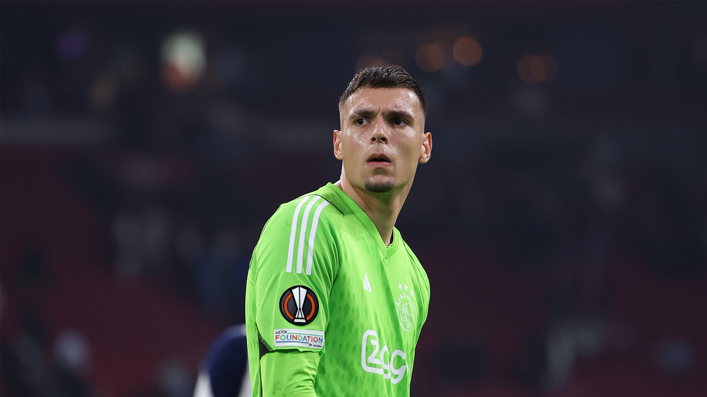
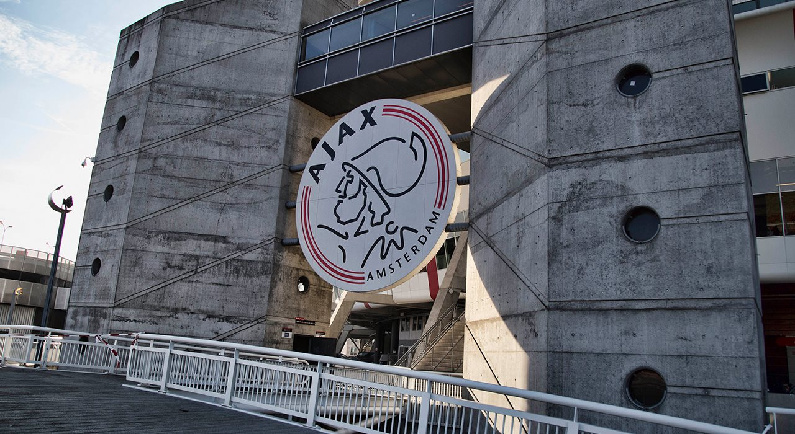
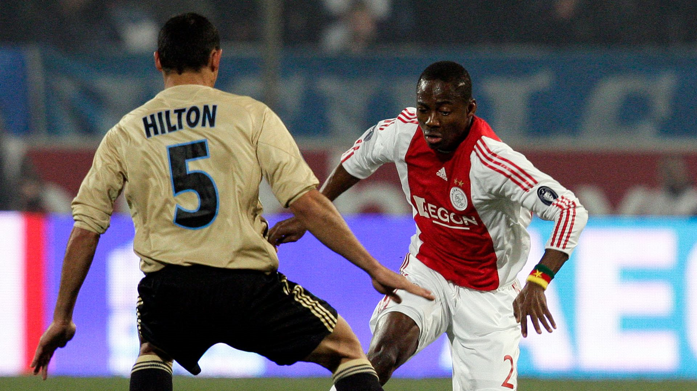

Voorbeschouwen met Gorter
Bekijk video Laatste kaarten Ajax - Marseille
Koop ticketsUitgelicht
Alle video's
Ajax third 23/24
Nu verkrijgbaar

-
Vereniging Ajax kiest nieuwe Bestuursraad
Bij de Buitengewone Algemene Ledenvergadering (BALV) van de Vereniging is door de leden een nieuwe Bestuursraad...
 -
Training Day | Groepsfase Europa League van start
-
Enoh: 'De sfeer in de returnwedstrijd tegen Marseille was écht anders'
 -
Vereniging Ajax kiest nieuwe Bestuursraad
-
Vereniging Ajax kiest nieuwe Bestuursraad
Duik in de wereld van Ajax
Boek een stadiontourKomende wedstrijden